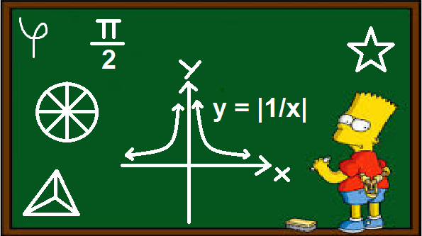
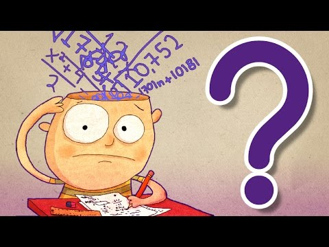
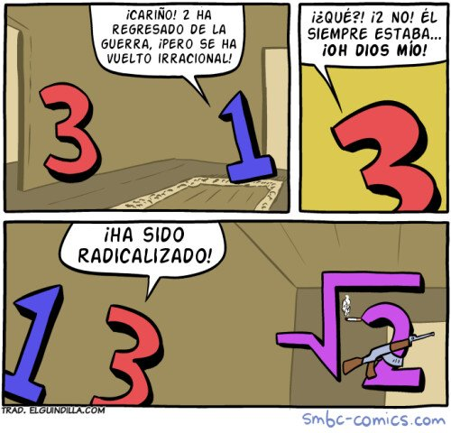

2018
Objetivos 2018
-
Profesorado de matematicas
-
Fundamentos de la matematica
-
Geometría
-
Didactica 1

Plan de acción
-
Organización de horario de estudio domiciliario
-
35hs semanales
-
Fundamentos de la matematica: 10hs
-
Geometría: 10hs
-
Didactica 1: 15hs
-
Organización de días
-
Lunes a domingo: 5hs diarias de estudio domiciliario.
-
De miercoles a viernes: 8hs diarias en el centro educativo.
-
Martes: 4hs en el centro educativo

Cumplimiento del plan de acción
Por motivos personales no pude concurrir por un mes a clase de geometría y fundamentos de la matemática por lo cual no cumplí con todas las hs semanales y abandoné dichas materias poniendo toda mi atención y dedicación en didáctica 1.
Objetivos alcanzados
Exoneración de didáctica 1 con una de las mejores calificaciones de mi grupo.
